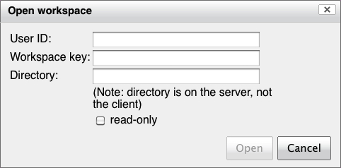
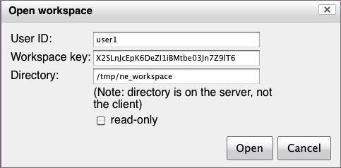
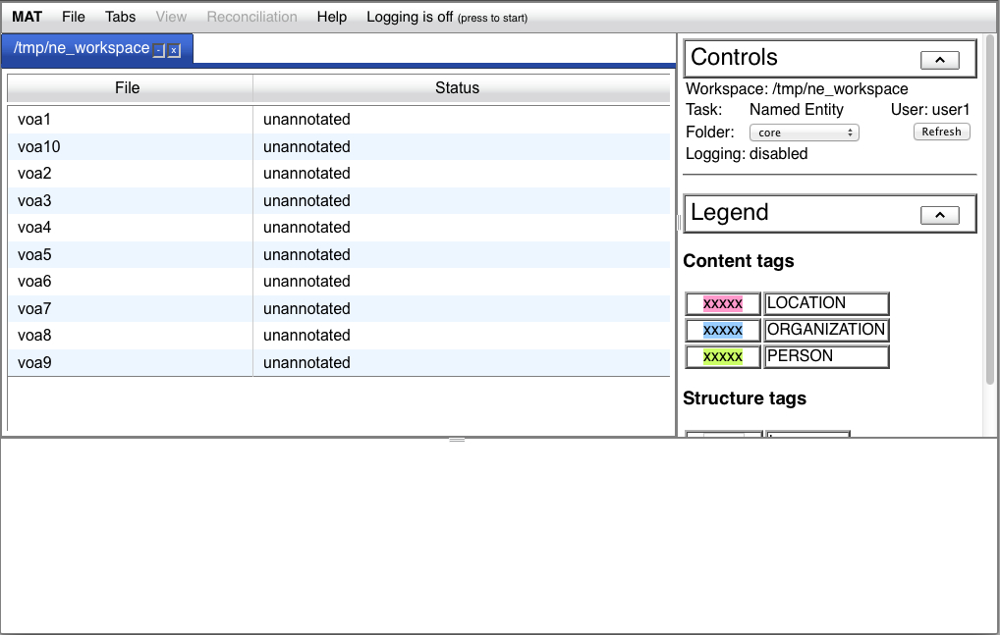
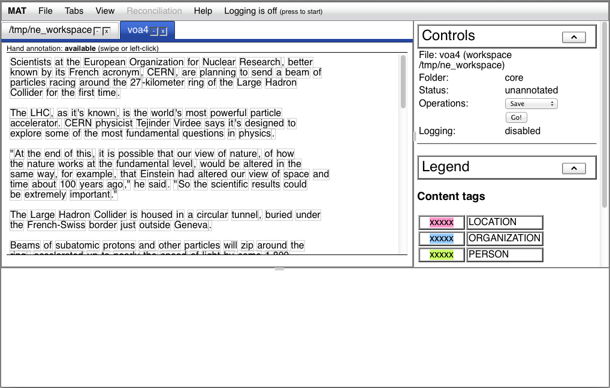
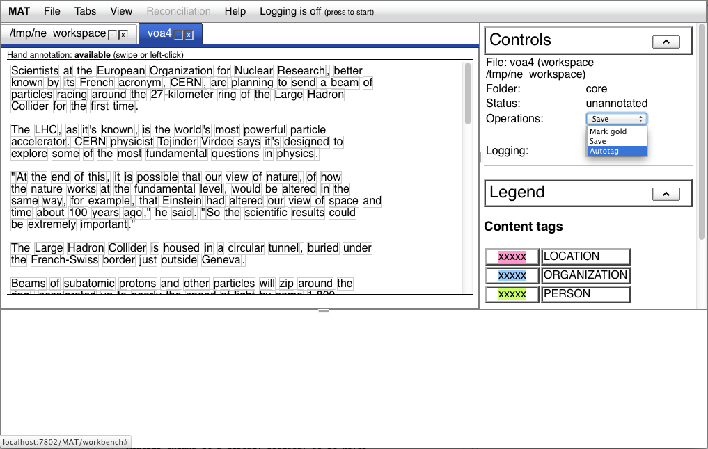
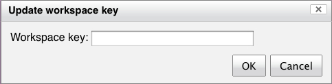

Only a subset of workspace actions
are available in the MAT UI. You can view the contents of folders
and apply operations to individual documents in workspace folders,
but you can't create workspaces, add users, import documents into
the workspace, or apply folder-level operations.
The native MAT Web server is not an enterprise-secure implementation, and will never be one. It does not use SSL; in workspace mode, it does not perform any sort of user authentication beyond the workspace key; it does not provide any security logging or traceability. You should assume that anyone who has access to your network can see your Web server traffic, and either observe or (in the case of workspaces) overwrite your data.
When you select "File -> Open workspace..." you'll be
presented with the following dialog:

You'll need to know which user ID to use; this is one of the IDs
you've provided either via the --initial_users option when you create the workspace,
or via the register_users
operation. Provide this user ID in the "User ID" field, and press
<tab> to enable and advance to the "Workspace key" field.
Next, you should copy the workspace key from the MATWeb command loop (or, if there's an
agreed-upon workspace key that you've provided to MATWeb when you
start up, provide that key). Once the workspace key is inserted
into the "Workspace key" field, you may press the <tab> key
in that field to enable and advance to the "Directory" field; once
the pathname of the workspace directory is entered in the
"Directory" field, you may press the <tab> key in that field
to enable the "Open" button:

If you only want to view the workspace, and don't plan on
perfoming any operations, select the "read-only" checkbox.
Note: the value of the
"Directory" field depends on how the MATWeb
server was started. By default, it should be a full pathname, as
shown. However, it MATWeb was started up with any
--workspace_container_directory options, this value must be a partial pathname, representing
a subdirectory of one of the workspace container directories. This
limitation is intended to provide a measure of security when
MATWeb is being used as a persistent service, by limiting the
directories on the server you have access to.
Initially, the workspace will contain the contents of the "core"
folder. This will be displayed in a tab in the upper left UI
region:

The tab shows the pathname of the workspace. The controls region on the right shows the pathname as well, and then the task associated with the workspace and the current user ID. Immediately below those, you see a drop-down menu on the left which allows you to select a workspace folder. Immediately to the right of the folder menu is a "Refresh" button; you may press this to resynchronize the workspace view with the workspace itself if you ever perform workspace actions on the command-line while the workspace tab is open.If you select a folder, you'll see a scrollable list of files in
that folder (or "Folder is empty" if the folder is empty). This
scrollable list shows the document basenames, along with the
document status. If you click once on an element in the file list,
it will open a workspace mode document tab. You will only be able
to select document basenames which are either unassigned or
assigned to you, and you will only be able to select locked
basenames which are locked by you. Basenames which you can't
select will be grayed out, and will not highlight when you hover
your mouse over the entry:
When you open a document in a non-read-only workspace, the
workspace will lock
the document. When you navigate away from the UI (either by
loading a different page, or closing the browser window, or
quitting the browser), the UI will do its best to free these locks
before shutting down. If for some odd reason the UI fails to free
these locks, you'll still be able to open documents which are
locked by you when you open the workspace the next time. Note: this means that it's
possible to open the same document in two different browsers; in
this case, only the most recently opened document will be able to
be modified and saved (since, by opening the document a second
time, you free and discard the first document lock).
The workspace mode document tab is very similar to the file mode
document tab:

It can be closed and hidden in the same way the document tab can,
and is listed in the Tabs menu. It, too, has a hand annotation
status line at the top, and a tag information line at the bottom.
However, it differs otherwise.
The tab itself contains the basename of the file. The controls
pane on the right also shows the basename, along with the
workspace it's drawn from in parentheses. Immediately below this
is the current folder, and below that is the document
status. Immediately below these is a drop-down menu of
operations available in this folder, and below this drop-down
menu, a "Go!" button which performs the selected operation.
Finally, below this is an indication of whether workspace logging
is enabled for this workspace.
There are no options to save the document to the client desktop,
no workflow, and no steps.
When you press the "Go!" button, the workspace applies the
selected operation to the selected document. For instance, you can
autotag this document using the current workspace model before
completing the hand annotation, or you can mark the document gold:

Finally, if you've happened to shut down and restart the Web
server while the UI is open, you might be in a situation where you
want to continue working, but the Web server has presented a new
workspace key. If you select "File -> Update workspace key",
you'll be presented with the following dialog:

If you enter the new workspace key and press the "OK" button, the
UI will now be able to continue to interact with the workspaces
via the UI without restarting.